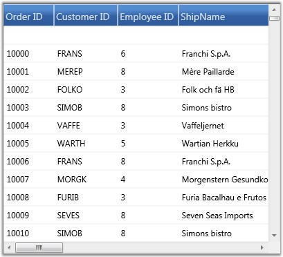

An ObjectDataProvider is a class which creates an object that you can use as a binding source. The GridData control supports this class (offered by WPF platform) that creates an object in the XAML code and can be used for data binding. The ObjectDataProvider allow the users to specify binding expressions against an object and its methods. You can also write custom data providers, if required.
Example
Here is an example that illustrates how to use Object Data Provider with GDC.
Say, your data source is defined in C# class named Order, and it queries the records from Northwind Orders table. Then the respective Object Data Provider definition is given by the code below:
 Note: The ObjectType attribute of
ObjectDataProvider should point to the data source you defined.
Note: The ObjectType attribute of
ObjectDataProvider should point to the data source you defined.
|
[XAML]
<Window.Resources> <ObjectDataProvider x:Key="order" ObjectType="{x:Type local:Order}" </Window.Resources> <syncfusion:GridDataControl x:Name="dataGrid" AutoPopulateColumns="True" AutoPopulateRelations="False" ItemsSource="{StaticResource order}" > |
Note: The following line in the above code
references the Object (Order), which returns the data for binding.
|
[XAML]
<ObjectDataProvider x:Key="order" ObjectType="{x:Type local:Order}" |
Defining the Order Class
The Order class returns the data to be bound to the Grid as shown in the following code:
|
[C#]
public class Order : ObservableCollection<Orders> { Northwind northWind; public Order() { string connectionString = string.Format(@"Data Source = {0}", "Northwind.sdf")); northWind = new Northwind(connectionString); var order = northWind.Orders; foreach (var o in order) { this.Add(o); } } } |
The following screen shot shows a GDC which bound with an Object data using the Object Data Provider.

Figure 141: GDC bound with Object Data
The GDC is bound with a data source provided by an object.